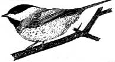
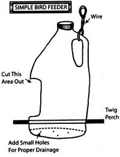

Attract birds to your yard and garden for year-round enjoyment by making a simple bird feeder with a plastic milk jug.
To make a homemade jug feeder, use a utility knife to cut a window out of the jug, about 2 inches up from the bottom. Poke several small holes in the bottom so rainwater can drain. Add a small stick just below the window for a perch. Some birds will feed inside the jug while others stand on the perch.
In addition to putting seed in feeders, you can also drop several handfuls of seed on the ground for the ground feeders. High-quality black-oil sunflower seeds are great as basic wild-bird food. Cracked corn, millet and thistle also are favorites of our feathered friends.
To make special bird treats, gather large pinecones, dip the cones in honey and then shake them in a bag full of cracked corn and white millet. Peanut butter also works, but honey seems to appeal to the largest number of birds.
One of the benefits of creating your own seed treats is that you can avoid commercial mixes that include less attractive filler seed to bulk up the mix.
|
 JULES DUGAN |
 STAN HESTAND |
|